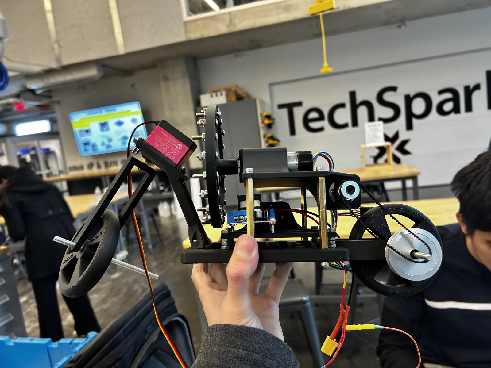
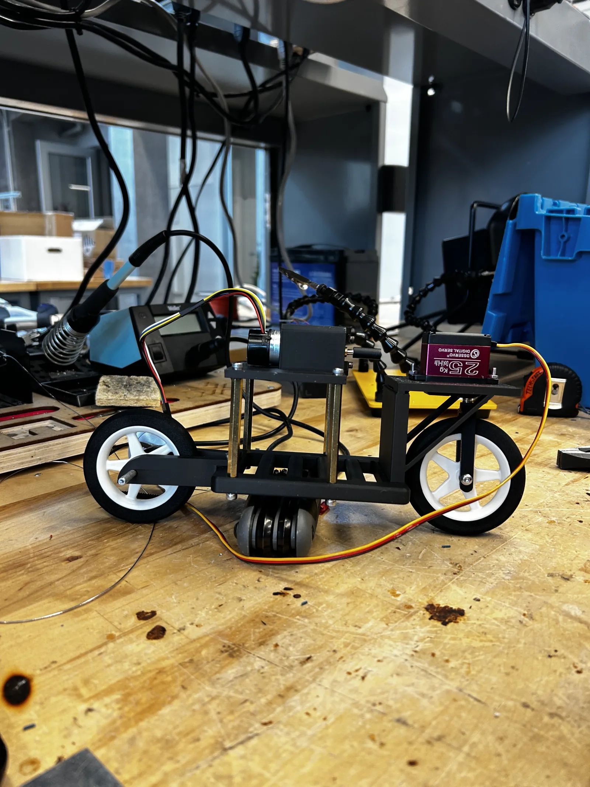
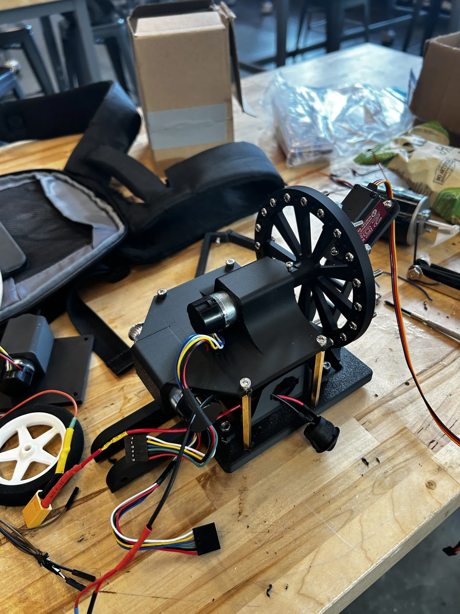

E-Ducati-On: An Educational Robotics Platform

Overview
Educational robotics platforms play a crucial role in teaching students about robotics, programming, and control theory. However, most self-balancing bike systems are either open source and passive, or expensive and closed source, limiting their effectiveness as educational tools.
E-Ducati-On is an educational robotics platform designed to teach students about robotics, programming, and controls. Our team built a Ducati based educational platform that is not only exciting and capable of performing stunts, but also features a visual interface and adjustable control parameters, enabling students to learn control theory through hands-on experience.

Prototype Development
The project went through multiple iterations, starting with early prototypes that tested individual subsystems before integration. This iterative development process allowed for refinement of the mechanical design, optimization of the control systems, and fine-tuning of the user interface to create an effective educational platform.
The early prototype phase focused on validating the core self-balancing mechanism and ensuring the platform could perform the exciting stunts that make it engaging for students while maintaining safety and educational value.
System Design and Educational Features
The platform combines the excitement of a Ducati motorcycle with comprehensive educational tools. The visual interface allows students to see real-time control parameters and system responses, while adjustable control parameters enable hands-on experimentation with different control strategies.
The system's ability to perform stunts makes it engaging and exciting for students, while the open architecture and visual feedback provide deep learning opportunities. Students can modify control parameters and observe the effects in real-time, gaining practical understanding of control theory, feedback systems, and robotics principles.

Similar work

Torsobot
Self-balancing rimless wheel robot investigating fundamental properties of human walk cycle with enhanced stability using PID control.

Cheap Opensource Robot Dog (CORD)
Open-source quadruped robot platform designed for educational purposes and affordable robotics research.

Return of the Jediode
An all-inclusive, immersive Star Wars project that takes users from building the lightsaber, choosing a crystal, to duel practice against Darth Vader.